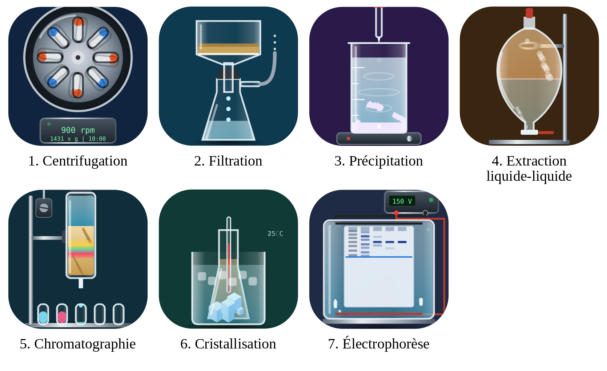
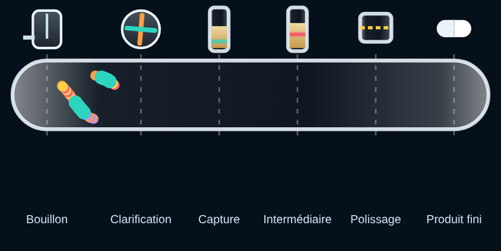

I. Introduction et problématiqueII. GénéralitésIII. Méthodes et matérielsIV. Étude d’un exempleV. ConclusionVI. Références
Problématique
Comment obtenir une biomolécule pure, stable et active à l’échelle industrielle ? Il faut séparer la molécule d’un mélange très complexe, sans la dénaturer, avec un bon rendement, un coût acceptable et un procédé reproductible et validé.
Sept familles de techniques

Centrifugation, filtration, précipitation, extraction liquide-liquide, chromatographies, cristallisation et adsorption, électrophorèse. Chacune existe en plusieurs types.
À retenir
- Étapes d’un procédé : clarification, capture, purification intermédiaire, polissage, formulation. Chaque étape gagne en pureté et perd en rendement.
- Contrôle qualité : HPLC, électrophorèse capillaire, spectrométrie de masse, ELISA, test LAL ; méthodes validées selon ICH Q2(R2).
- Qualité par la conception : attributs critiques (CQA), paramètres critiques (CPP), espace de conception (ICH Q8 à Q10).
- Innovations : chromatographie en continu, usage unique, monolithes, systèmes aqueux biphasiques.
- Autre exemple : l’anticorps monoclonal (protéine A, inactivation virale, échanges d’ions, nanofiltration).
Exemple : CORECT® (acarbose 50 mg)

Comprimés, boîte de 30, voie orale. Médicament de référence : GLUCOBAY® (Bayer). Inhibiteur des α-glucosidases. Produit par fermentation d’Actinoplanes.
6,6g/L publiés
A à Himpuretés
1990production industrielle
Défi : séparer l’acarbose de molécules très proches, dont le composant C. Étape clé : adsorption sur résine échangeuse de cations.
Le voyage de la molécule

Site interactif : animations, laboratoire virtuel, défi du procédé. Scannez le code (lien provisoire à remplacer après l’hébergement sur GitHub).
Références clés : [1] Xue et al., 2013 ; [2] Zhao et al., 2018 ; [4] US 6,649,755 ; [5] EMA, ICH Q2(R2) ; [12] notice Glucobay (Bayer) ; [27] EMA, ICH Q8(R2) ; [30] BioPharm International. Liste complète dans le compte rendu.